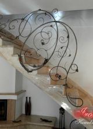

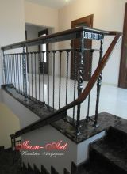

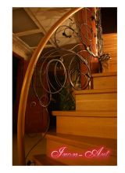
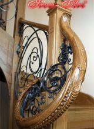


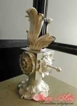
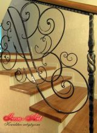


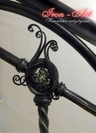
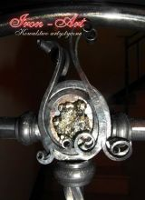


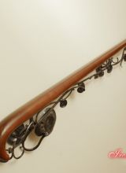
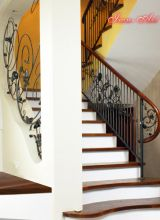

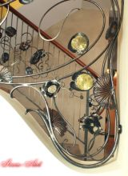


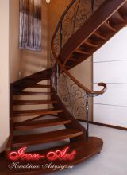
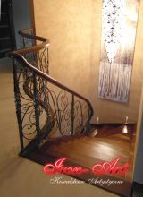
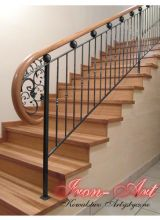
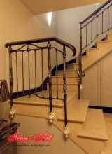

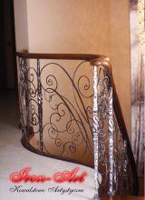
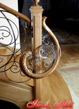


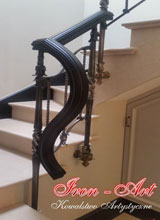
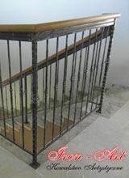
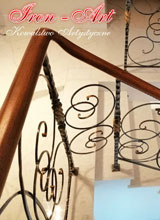
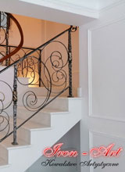
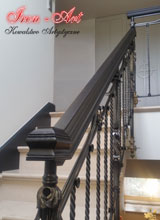
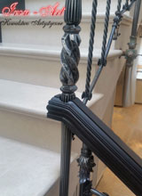
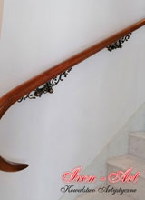
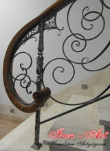
Individual approach – own choice
We offer forged railings made according to your design. We also have a catalog with different examples of the products to choose from. The waiting time for an internal railing design varies from 1 to 3 business days. We can also make railings that match the interior visually, if you are unsure which one to choose.
Lead time
All our projects are made individually, so the waiting time for the finished product may vary for depending on the order. It all depends on how complex the project is. In the case of simple balustrades, the lead time is from 1 to 2 weeks, however a more advanced and ambitious project can take up to 6 months.
Materials which we use
Our balustrades are made mostly of forged steel. It is possible to combine other non-ferrous metals, such as brass, copper, silver and acid. All our products are sandblasted and painted with a special paint to protect them against corrosion.
Internal railings-price list
All types of railings are made for the specific order which was placed. There are three price categories for internal balustrades:
- First group- the cheapest balustrades - made mostly of ready-made and simple elements (mainly modern style, without decorations).
- Second group- made of ready-made elements and handmade elements.
- Third group- the most expensive balustrades - made mainly of handmade items, have a large number of decorations and ornaments.
We assemble and attach products made by us to stairs - our service is complete, from design up to installation.
Measurement of balustrades
We make measurements manually at the place where the balustrade is to be located. The exception is when the customer provides us with a technical drawing of the object.
Product Warranty
We provide warranty for all our artistic smithery products. For internal balustrades, we provide a 2 to 6 years warranty depending on the price.
Safety function
We are aware of the fact that in addition to the aesthetic function, wrought iron railings must also be safe and durable. We are able to combine both functions, thanks to our many years of experience in creating artistic metalwork and blacksmithing. Our projects are solid and safe, and at the same time stylish and elegant.